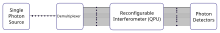

Background#
Lightworks is designed to enable the configuration of linear optic interferometers for Discrete-Variable quantum computing. These linear interferometers have application in both the qubit and boson sampling paradigms of quantum computing. A typical system configuration is shown in the image below:

The process begins with a single photon source (SPS), which generates a temporally separated train of single photons at regular intervals. The demultiplexer then uses fast switching to convert this into a set of spatially separated photons, with delay lines used to shift these photons into the same time bin. Once aligned, the created multi-photon input will enter the QPU, through which the photons will propagate while interfering with each other. The exact nature of this interference will depend on the QPU configuration. The photons then exit the QPU, at which point they are then measured to determine the results of the computation.
Boson Sampling#
Boson Sampling was first proposed in [AA10]. Similar to the configuration described above, it consists of multiple indistinguishable photons being input into a linear interferometer and the output of the system measured. The interaction of photons as they propagate through the system turns out to create an output probability distribution which is equivalent to the calculation of the permanent for the unitary implemented by the interferometer. The permanent of a matrix is computationally hard, and so this potentially offers a route towards quantum advantage for large enough systems.
Qubit-based Computing#
It has also been shown that linear optic systems can be used to probabilistically implement the gates required for qubit-based quantum computing. Two of the key proposals for these originate from [RLBW02] and [KLM01]. The former describes a 6 mode system which is able to implement a CNOT gate with probability of 1/9 through the use of a set of post-selection rules on the output. The latter is an 8 mode system, which requires the introduction of two additional heralding photons, and these are used to herald the gate success with a probability of 1/16. These additional heralding photons provide the advantage that the qubits themselves do not need to be measured for gate success, and can therefore process to be used in future operations.
When using photons as qubits, it is necessary to use one of the available properties of the photons for encoding the qubit state. There are a number of options for this encoding, including the spatial, temporal and polarisation degrees of freedom. Lightworks uses a spatial mode-based framework, so it is easiest to use the spatial dual rail encoding when examining photonic gates. In actual systems, there is also some benefit to using this type of encoding. As the name suggests, dual rail encoding consists of one photon across two spatial modes, with the \(\ket{0}\) state being defined as the photon existing on one mode and the \(\ket{1}\) state defined as the photon existing on the other mode. A superposition state is then when the photon exists in a superposition across the two spatial modes.
This dual-rail encoded version of both CNOT gates are both demonstrated in example notebooks.
Note
While Lightworks does not currently support other encoding methods, it is usually possible to translate a system with any other encoding into a set of spatial modes.